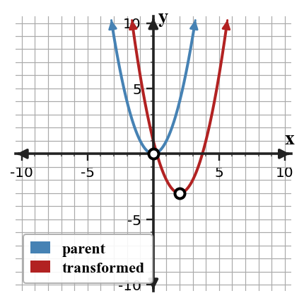
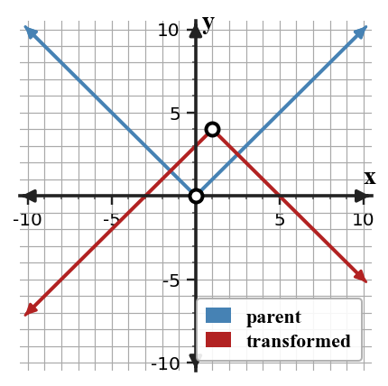

Mathematical idea: A transformation changes a graph in predictable ways while preserving important key features.
Today you will connect equations, key points, and graphs for transformations. You will write rules, describe movements, and critique common sign errors.
Learning Target: Students will analyze transformations across multiple function families.
I can statements
This is a long-range preview for future lessons. Do not solve it today. Instead, annotate it individually. Circle anything familiar, underline symbols or directions that seem important, and write notes about what information you think will be needed later.
As you annotate, ask yourself: What parts (words, symbols, graphs) do you KNOW? What parts look FAMILIAR? What parts look like jibberish?
Recommend whether a shifted quadratic or shifted absolute value model is better for a path with a single minimum at $(4,2)$ and equal slopes on both sides. Justify using key features and context.
Teacher note: students should annotate familiar representations only; do not solve the future task yet. Listen for evidence words such as table, graph, model, vertex, rate, ratio, or context.
Directions
Read the introduction aloud with a partner or in a small group. As you read, annotate the text by highlighting important ideas, circling key vocabulary, and writing short notes about connections, questions, or predictions in the margins.
A parent function gives us a familiar starting graph. When the graph is translated, key points move the same distance and direction as the rest of the graph. For example, a vertex can move while the shape remains the same.
Transformation notation tells us where the movement happens. The expression $f(x)+k$ moves outputs up or down, while $f(x-h)$ moves the graph horizontally. These two changes affect different coordinates of key points.
Horizontal changes can surprise people because they happen inside the input. A graph with $(x-3)$ is asking what input would make the inside match the old input. That is why students often need to check a key point instead of relying on a quick sign guess.
Key features help connect function families. A quadratic has a vertex, an absolute value graph has a vertex, a line has an intercept and slope, and an exponential graph has starting value and repeated growth behavior.
Transformations are useful in modeling because a familiar rule can be adapted to a new starting point, benchmark, or scale. The equation should match the movement seen in the graph and the meaning of the context.
Teacher note: use this space for student annotations from the reading. Ask students to underline the sentence that answers each first two Stop and Discuss questions.
Stop and Discuss
Intro S&D answers: Q1: The answer is stated in paragraph A. Q2: The answer is stated in paragraph B. Q3: Students infer from paragraph C; accept answers that connect the concept to evidence rather than keywords.
A translation moves every key point by the same horizontal and vertical amount.
$$f(x)=x^2$$ $$g(x)=(x-2)^2-3$$| Feature | Parent | Transformed |
|---|---|---|
| Vertex | $(0,0)$ | $(2,-3)$ |

Context: If the vertex is a minimum height, the transformation moves the time and height of that minimum.
The parent function is $f(x)=x^2$. A transformed function is $g(x)=(x+2)^2$.
Example 1 answer: Quadratic parent. $(x+2)^2$ shifts the graph left 2 units. The vertex moves from $(0,0)$ to $(-2,0)$. Teaching reminder: require the evidence sentence, not just the final answer.
The parent function is $f(x)=|x|$. A transformed function is $g(x)=|x-5|$.
You Try It 1 answer: Absolute value parent. The graph shifts right 5 units. Vertex moves from $(0,0)$ to $(5,0)$. Follow-up: ask which representation made the answer easiest to see.
Stop and Discuss
Stop and Discuss A answer: The vertex shows the actual left or right movement, which prevents inside-sign errors.
Write the parent rule first, then apply the horizontal and vertical changes.
Equation move: right $4$ and up $1$ gives $g(x)=f(x-4)+1$.
| Change | Equation move | Graph move |
|---|---|---|
| Right $4$ | $x-4$ inside | inputs increase by $4$ |
| Up $1$ | $+1$ outside | outputs increase by $1$ |
Context: A shifted model can represent the same shape beginning later or at a different starting value.
Start with $f(x)=x^2$. Create a new graph by shifting the parent graph right $4$ units and up $1$ unit.
Example 2 answer: Right 4 gives $(x-4)^2$ and up 1 gives $g(x)=(x-4)^2+1$. Vertex is $(4,1)$. Teaching reminder: require the evidence sentence, not just the final answer.
Start with $f(x)=|x|$. Shift the graph left $3$ units and down $2$ units.
You Try It 2 answer: Left 3 gives $|x+3|$ and down 2 gives $g(x)=|x+3|-2$. Vertex is $(-3,-2)$. Follow-up: ask which representation made the answer easiest to see.
Stop and Discuss
Stop and Discuss B answer: Inside the input controls horizontal movement; outside addition or subtraction controls vertical movement.
A negative outside the function reflects outputs over the $x$-axis, and an outside constant shifts outputs up or down.
$$g(x)=-|x-1|+4$$| Feature | Meaning |
|---|---|
| $-|x-1|$ | opens downward after reflection |
| $+4$ | vertex output is $4$ |

Context: A reflected graph can model a maximum instead of a minimum.
Start with $f(x)=|x|$. A new function reflects the graph over the $x$-axis and shifts it down $3$ units.
Example 3 answer: Reflection over the x-axis gives $-|x|$. The rule is $g(x)=-|x|-3$. Vertex is $(0,-3)$ and the graph opens downward. Teaching reminder: require the evidence sentence, not just the final answer.
Start with $f(x)=x$. A new function reflects the graph over the $x$-axis and shifts it up $5$ units.
You Try It 3 answer: Reflection gives $-x$, so $g(x)=-x+5$. The slope changes from 1 to -1, and the y-intercept becomes 5. Follow-up: ask which representation made the answer easiest to see.
Stop and Discuss
Stop and Discuss C answer: A reflection changes orientation or opening direction, while a translation moves the graph without changing its shape.
A student claims $g(x)=(x+2)^2-5$ shifts $f(x)=x^2$ right $2$ units and down $5$ units.
Example 4 answer: Vertex is $(-2,-5)$. Down 5 is correct, but right 2 is incorrect. It shifts left 2 and down 5. Teaching reminder: require the evidence sentence, not just the final answer.
A student claims $h(x)=-|x-4|+1$ opens upward because the absolute value parent opens upward.
You Try It 4 answer: Vertex is $(4,1)$. The negative outside reflects the graph over the x-axis, so it opens downward, not upward. Follow-up: ask which representation made the answer easiest to see.
Stop and Discuss
Stop and Discuss D answer: Find a key point such as a vertex or intercept and compare it to the claimed movement.
In this section, you practiced transformations across function families by using evidence instead of guessing.
Strong work connects at least two representations, such as a table and equation, a graph and context, or a feature and a model family.
The most common error is trusting a surface clue without checking the mathematical pattern or feature.
Strong understanding means you can explain why a model, transformation, solution, or strategy fits the situation.
Look back at the future task. Do not solve it yet. Highlight one part that makes more sense now than it did at the beginning. Circle one part that still feels unfamiliar. Write one sentence about what representation you would look at first.
Describe the transformation from $f(x)=x^2$ to $g(x)=(x-4)^2$.
Write an equation for the transformation of $f(x)=x^2$ that shifts right $3$ units and down $5$ units.
What is one idea about transformations across function families you understand better now than at the start of class? Write at least one complete sentence.
What is one thing about transformations across function families you still want to understand or practice? Be specific — name the idea, not just "everything."